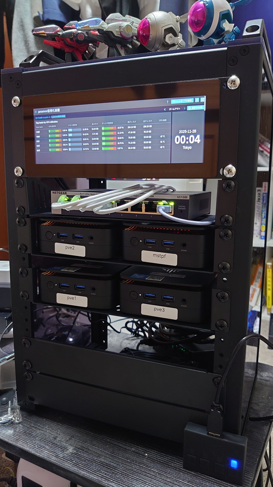
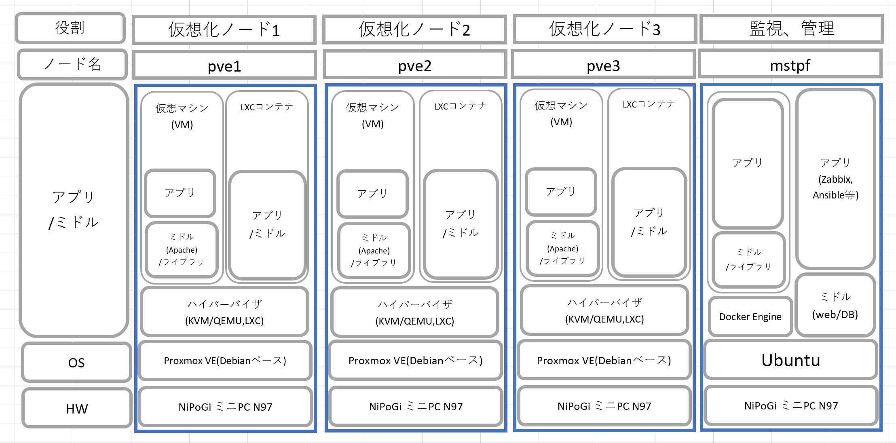
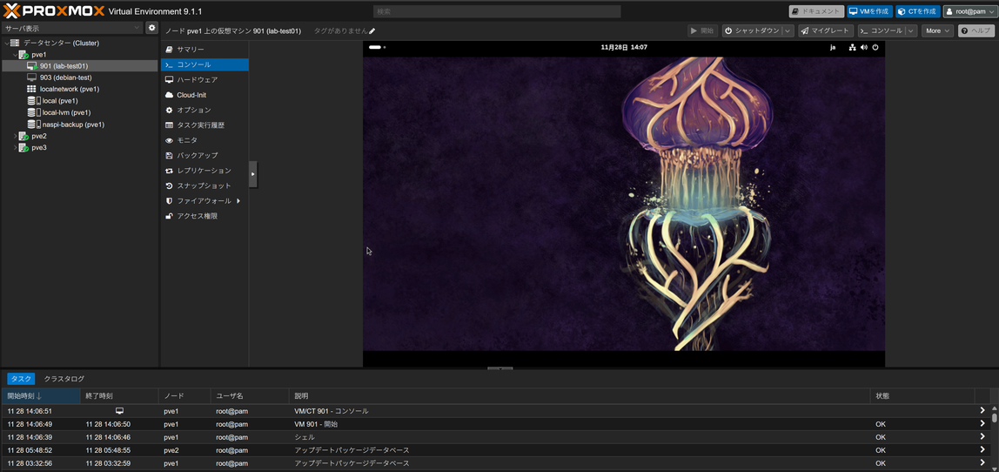
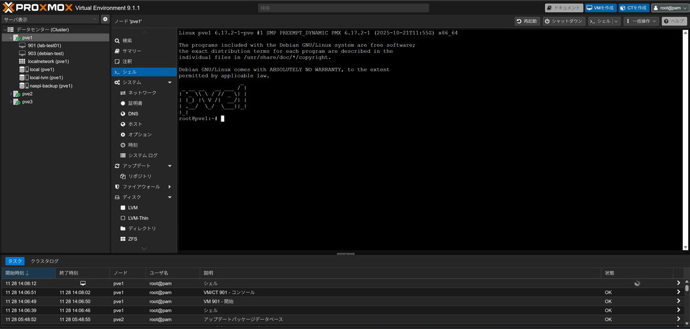

1. プロジェクト概要
自宅ラボ環境において、複数台のミニPCを用いた Proxmox VE ベースの仮想化基盤 を構築しました。
物理サーバをそのまま増やすのではなく、仮想化基盤上に複数の VM を集約することで、以下を実現しています。
- 検証用サーバの素早い立ち上げ・削除
- リソース（CPU / メモリ / ストレージ）の有効活用
- 障害時の復旧・移行のしやすさ
2. 目的・背景
これまで自宅ラボでは、Raspberry Pi などの物理サーバに直接 OS や各種サービスをインストールしていました。
しかし、新しい検証を行うたびに OS の入れ替えが必要だったり、サービスごとの環境差分管理が複雑になったり、物理障害が発生した場合の復旧に時間がかかるといった課題がありました。
そこで、仮想化基盤の導入による柔軟なリソース管理と運用効率化を目的に、Proxmox VE を用いた基盤構築に取り組みました。
3. 物理構成（ハードウェア）
Proxmox クラスタは、省電力かつ十分な性能を持つミニPC（NiPoGi N97）をベースに以下のような構成としています。
クラスタ外観

ノードスペック詳細
- pve1 / pve2 / pve3：仮想化ノード
- モデル：NiPoGi Mini PC N97
- CPU：Intel N97 4Core 4Thread 3.4GHz
- メモリ：16GB
- ストレージ：SSD 512GB（OS＋ローカルストレージ）
- OS：Debian GNU/Linux 13 (trixie) + Proxmox VE 9.1.1
- 用途：VM の実行、クラスタ構成メンバー
- matpf：監視ノード
- モデル：NiPoGi Mini PC N97
- CPU：Intel N97 4Core 4Thread 3.4GHz
- メモリ：16GB
- ストレージ：SSD 512GB（OS＋ローカルストレージ）
- OS：Ubuntu 24.04.3 LTS
- 用途：Zabbix(監視)による検証環境全体の監視
将来的にProxmox ノード用ネットワークは、家庭用機器とはVLANで論理的に分離しつつ、自宅内からは SSH や Web UI で管理できるように構築を検討しています。
4. Proxmox 仮想化基盤の構成
以下は、Proxmoxクラスタ(pve1～3)および監視サーバ(mstpf)のスタック図です。

4.1 クラスタ構成
Proxmox VE を用いて、複数ノードによる クラスタ構成 を構築しています。クラスタを組むことで、以下のメリットを享受できるように設計しました。
- 単一の Web UI から全ノード・全 VM を一元管理
- Live Migration による VM のノード間移動
- 将来的な HA（高可用性）構成への拡張
4.2 ストレージ構成
現在は各ノードの ローカルSSD を VM ディスクの格納先として利用しています。シンプルな構成とすることで、初期構築のハードルを下げつつ、Proxmox の基本操作やバックアップ運用に集中できるようにしました。
バックアップ用に既存NAS(naspi)をマウントしており、将来的には分散ストレージ（Ceph）の導入も検討しています。
4.3 仮想マシンの構成例
仮想化基盤上には、主に以下のような VM を配置しています。
- 監視用 VM（Zabbix プロキシ / テスト用 Zabbix サーバ など）
- 検証用 Linux サーバ（新しいディストリビューションの検証・学習用）
- Web アプリケーション検証用 VM
新しい検証を行う際には、テンプレートから VM をクローンすることで、数分で新しい検証環境を用意できるようになりました。
5. 運用・監視・バックアップ
- 監視
既存の Zabbix 監視基盤に Proxmox ノード（pve1〜pve3）を監視対象として追加し、CPU 使用率、メモリ使用量、ディスク使用率、稼働プロセスなどを可視化しています。 - バックアップ
Proxmox のバックアップ機能を用いて、重要な VM を定期的にバックアップストレージへ退避しています。復元テストも実施し、バックアップデータから VM が正常に起動することを確認しました。 - アップデート運用
Proxmox ノードおよび VM の OS 更新は、事前にスナップショットを取得した上で実施し、問題が発生した場合にはロールバックできるようにしています。
6. 工夫した点・苦労した点
工夫した点
- 自宅ラボという制約の中で、消費電力と性能のバランスを考慮し、Intel N97搭載のミニPCを選定しました。
- Proxmox のクラスタ機能を活用し、ノード障害時にも別ノードで VM を再作成しやすい構成を目指しました。
- Zabbix による監視と組み合わせることで、リソース逼迫や障害の兆候に早期に気付けるようにしました。
苦労した点
- ラックにマウントする際のPC、L2SWの配置やLANケーブルの配線（後日詳細追記予定）
7. 学び・身についたスキル
このプロジェクトを通じて、以下の知識・スキルを実践的に身につけました。
- ハイパーバイザ型仮想化（Proxmox VE）の仕組みと基本操作
- クラスタ構成・ノード間通信・Quorum の考え方
- 仮想マシンのライフサイクル管理（テンプレート化、クローン、スナップショット、バックアップ）
- 監視システム（Zabbix）との連携による、リソース監視・障害検知
- ネットワーク設計（管理ネットワークと家庭用ネットワークの分離 など）
これらの経験は、将来的に企業の仮想基盤やクラウド環境の運用・設計に携わる上での基礎になると考えています。
8. 今後の発展アイデア
- Ceph 等による共有分散ストレージの導入
- HA（高可用性）機能を有効にした、自動フェイルオーバー構成の検証
- Ansible を利用した VM デプロイや設定の自動化
- Kubernetes などコンテナ基盤との組み合わせ検証（仮想化基盤上での K8s クラスタ構築）
9. Web UI画面
以下は、ProxmoxWeb UI画面です。
実際にVM(仮想マシン(CentOS-Stream-10))を起動している様子。

以下は、Web UI上でpve1にてシェルを起動している様子。
